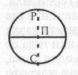

Беседа 3746 от 3877 · Беинса Дуно
Правилно мерене
Отче наш
Сила, здраве е богатство
Бог е Любов
Често задавате въпроса защо човек страда и защо човек се радва. В Бога има две воли: когато човек не изпълнява законите Му, Той му изпраща скръб; когато изпълнява Волята Му, изпраща му радост. Всяка радост, където и да е, на Небето, на Земята, се дължи на Волята Божия, на добрата Воля Божия – всякога скръбта, където и да е, защото скръб има и между ангелите, много деликатна някаква скръб. Писанието казва, че когато хората съгрешат на Земята, ангелите чувствуват неприятност. Не само ангелите, Бог я чувствува. Бог я чувствува и за да бъде дълготърпелив, Той трябва да чувствува някаква неприятност. Толкоз години забелязвам и аз се чудя, разумение трябва. Много малко хора има, които вървят по пътя на Истината, да представят нещата тъй, както са. Най-първо вие нямате ясна представа за себе си, мислите, че с много големи работи сте заети. Че може да направите нещо, може. Всеки един от вас може да запали цял град. Ако един американец, който доил своята крава, и кравата ритнала свещта, че се запалил оборът и от него целият град Чикаго – и вие може да направите такова нещо. Това е станало в 75-та година на миналия век и половината град изгорял от тази свещ. Някои от вас говорите неща, които не са верни.
Вие се интересувате кой ще победи. Който върши Волята Божия, ще победи, нищо повече. Англичаните ще победят, германците ще победят, русите ще победят – това са неразбрани работи. Турили са в моята уста, че аз съм казал, че русите ще победят, та трябвало вече да се учи руски и английски език. Вие си създавате цяло нещастие. Чудни сте вие. Когато дойдете до Истината, какво ще говорите? Вие може да си създадете неприятности. В миналата война казах кой ще победи, че ме интернираха. Казах тогава, че англичаните ще победят и германците ще изгубят войната. На българите казах и на германците казах да се спогодят с англичаните, да направят отстъпки и да се не бият докрай. Дойдоха англичаните, направиха една лъжа, за която е тази война. Не изпълниха Волята Божия, каквото говориха, не изпълниха и впоследствие дойде тази война. Вие мислите, че ако не изпълнявате Волята Божия, че така ще мине. Вие мислите, че ще дойде в света един порядък. От сега нататък страдания идат в света. Вие очаквате Царството Божие. Ще дойде Царството Божие, но докато дойде Царството Божие, ще има такова пране, оране, върхане, мелене под хромеля, та докато се опече този хубавият хляб, много страдания ще минете. Вие сте чудни хора, казвате: “Учителя каза ще дойде Царството Божие”. Царството Божие ще дойде, но човек трябва да разбира Божията Разумност – Б. Р. Човек трябва да разбира Божията Динамичност – Б. Д. и Божията Твърдост – Б. Т. Ако има в света един, който е твърд и непоколебим, той е Бог. Така трябва да се разбира. Вие влизате в стълкновение със себе си, борите се в себе си. Един ви говори едно нещо, вие искате да вършите друго, ти се бориш със себе си. С кого се бориш? Той казва: “Да бъдеш разумен”. Ако не си разумен, скръбта ще дойде. Ако не си благороден, ако тази динамичност и благородство ги няма, ще дойде скръбта. Ако ти на Земята не знаеш как да постъпваш, ще дойде скръбта.
Мнозина от вас искат да имат Откровение. Апостол Павел казва: “При многото Откровения, даде ми се ангел сатанински да ме мъчи, за да не би да се възгордея и да изопача Божията Истина”. Що е един ангел сатанински? Една спирачка. Турена е тази спирачка, че като слиза, да не би да се катурне от релсите. После аз не съм за страданията, да страдам само за една чаша вино, то е глупост. Да страдам само за едно парче хляб, то е глупост. Да страдам за една шапка, то е глупост. Да страдам за една глупава дума, то е глупост. Аз приемам едно страдание – ако страдам, да страдам за Любовта, то е добре дошло. Ако страдам за Божията Мъдрост, добре дошло е. И ако страдам за Божията Истина, добре дошло е. Три неща има, за които страданията са оправдателни. Оттам насетне всичките други работи са човешки глупости, на които край няма.

Имате: казвам, аз казвам. Каква е разликата? Печатно по-лесно се пишат буквите. Тази дъска не е достатъчно гладка, противодействие има. Аз харча повече енергия. Другото е по-практично, ръкописно. Ако пиша дребно, вие не можете да го видите. Може да избегнете тия мъчнотии. Ще го напиша много ситно, но нищо няма да разберете. Ако река да пиша с едри букви, срещам по-голямо съпротивление, взема ми повече време да го пиша. Ако кажа “казвам” и “аз казвам”, каква е разликата? Казвам, значи както всичките хора казват широко, неопределено. Аз казвам, значи аз казвам специално, аз казвам това, опитал съм туй. Казвам е, както другите желаят, както хората желаят, но аз казвам, е специално, както аз желая. Аз желая, че като кажеш “аз”, в аз ти се натоварваш. Като кажеш “казвам”, ти си свободен. Като кажеш “аз казвам”, ти се ангажираш пред Божествения свят, ти се ограничаваш. Ако не изпълняваш онова, което си казал; ако не казваш Истината както трябва; ако не носиш Знанието както трябва; ако не носиш Любовта както трябва, тогава какво ще излезе? Защото Любовта е, която регулира света, Мъдростта е, която регулира света и Истината е, която регулира света. По три начина Бог регулира нещата в света. Щом не приемеш Любовта, зад Любовта в тебе ще остане безлюбието. Значи Любовта тебе ще те лиши от живота, ще дойдат болестите, ще дойдат страданията. Щом не изпълняваш Волята Божия, Мъдростта ще те лиши от знанието. Като не слушаш Мъдростта, тогава ще се блъскаш в света, няма да знаеш какво да правиш. Ако не слушаш Истината, ще се ограничи твоя живот, вътре ще се ограничи и няма да знаеш как да постъпваш. Казвам: вие още не сте дошли до онова разбиране – вие във себе си не разбирате кога Господ ви говори, кога хората ви говорят и кога вие говорите на себе си.
Трима има в човека. Едното е по права линия, то е Бог сега. Отгоре са Светлите Духове, които ви говорят. Радостта е горе (показва чертежа), другите са долу, които са изпратени с една длъжност, да наложат Божия закон, да изправят света. Сега вие мислите, че сте чада Божи. Ти си чадо Божие, докато изпълняваш Волята Божия. Щом не изпълняваш Волята Божия, не си чадо Божие. Дотогава, докато изпълняваш закона на Любовта, ти си чадо Божие; щом не изпълняваш закона на Любовта, никакво чадо не си. Ти си един такъв слуга, един от най-долните слуги. Като изпълняваш Волята Божия, по закона на Божията Мъдрост, ти си чадо Божие. Ако изпълняваш Волята Божия, по законите на Истината, ти си чадо Божие. Щом не изпълняваш най-малкото, ти се лишаваш. Сега вие считате на Земята, че човек е осиновен. Често има бащи, които са се отказали от своите синове и като се откажат от тях, лишават ги от наследство. Когато Бог се откаже от вас, ще ви лиши от Неговата Любов, ще ви лиши от Неговото Знание, ще ви лиши от Неговата Свобода. Какво ви остава? Най-първото нещо – в себе си трябва да дойдете до едно разбирателство, да спазвате тия закони на Божията Любов. Никога не противодействайте на Божията Любов в себе си. Аз не говоря за вън. Вътре във вас не противодействайте. Ето как може да противодействаш. Ти искаш да станеш слуга, Бог те праща при един добър господар, но нищо не ти плаща, само храни те добре. Друг господар е лош, но той ти плаща по десет хиляди на месец и те храни добре. Той ще изопачи твоя живот. Господ ти казва да идеш, да служиш при този, който нищо не плаща. Казвате: “Как тъй нищо не плаща? Ще служа на този, който плаща”. Ако служиш при този, който плаща много, той е като онзи българин, който гои свинята си и по 4-5 пъти на вечер става, храни я, много добре е разположен, но туй разположение е само до Коледа. Като дойде Коледа, има квичение. Най-първо той ще я тури в кочината. Коч-ина. Кой е коч? В едно стадо кочът е на главното място и свинята най-първо задебелява, като нейната кочина няма друга. Често виждате софийските хали. Много хубави са, но като влезете вътре, какво има?
Разумно трябва да се живее. Всеки един от вас може да си вреди. Вие като не знаете езика, създавате мъчнотии на другите. Често някои деца отиват да гледат пчелите. Някое дете вземе пръчката и започне да мушка кошера. След това хукне да бяга. Детето, което раздразнило пчелите, него не го хапят. Но като излязат пчелите, ужилват другите деца. Защо ще бутате пчелите да жилят?
Преди два деня дойдоха двама души мечкари. Единият дойде на игрището, дето играем и той стои, докато ние играем. Братът свири марша и мечката играе. Тя казва: “И аз мога”. Гледам по едно време всичките даваха в копанята. Гледам той има и жена. По едно време казвам да си върви, имаме друга работа, няма да се занимаваме с мечката. На другия ден – ето друг мечкар иде. Гледам тази мечка по-голяма и той с жена си. Като дойде, започнаха да ми проповядват морал – защо не пусне мечката, защо я мъчи. Той им казва: “Прехранвам се с нея, 30 000 лева ми струва. Как да я пусна в гората, аз с какво ще се прехранвам?” На тази мечка той пробил дупка в носа и я вързал за нея с халка. Питат го: “Защо е тази халка?” Той казва: “Ако не е тази халка, не слуша. Като потегля тази халка, какво ли не прави. Играе”. Казвам: такава ли свобода ние искаме, да ни турят една халка и да играем на хорото. Като имаш халка, искаш, не искаш, ще играеш.
Тази промяна на времето се дължи на изселването на евреите. Тия хора отправят мисълта си към Бога и управляющите, които не знаят законите, може да създават цяло нещастие на България. Онези, виновните по закон, да ги съдят. Но и добри хора има между тях и между нас. Казват – има комунисти. Но между българите има 50% комунисти, а между евреите 20%. Че има комунисти, трябва ли да се изтреби целият български народ? Че и между евреите имало комунисти. Че в света имало лоши хора, приятно ли е това на Бога? Изтреби ли Той хората? Справедливост трябва в света. Ако днес за теб е страданието, утре ще бъде за другите. Казват на нас: “Като свършим с евреите, ще дойдем до вас”. До нас като дойдете, България ще се заличи, ще се заличи от картата. Тяхното наказание ще бъде два пъти, три пъти по-лошо от това на евреите. Аз проповядвам едно Учение и казвам каква е Волята Божия. Един ден Господ като заличи много народи, ще заличи и българите. Българите са важни, докато вършат Волята Божия. Всеки народ е важен, докато върши Волята Божия. Щом не върши Волята Божия, ще се зачеркне от лицето на Земята. Евреите са избран народ и 2000 години ги тласкат. Защо? Не е работата там. Три неща трябва да изпълняват евреите. Трябва да се подчиняваме на Божията Мъдрост, трябва да се подчиняваме на Божията Любов доброволно, трябва да се подчиняваме на Божията Истина. Аз не съм – един народ да дойде да управлява другите народи. Ако един народ иде в Името Божие, да изпълни Волята Божия, добре дошъл. Ако един народ дойде и извърши насилие, не споделям. Всяка воля, която е от Бога, приемам; всяка воля, която не е от Бог, не може да приема. Онова, което не е Божествено, то носи смърт. Онова, което е Божествено, носи живот. Всякога, когато приемем Божественото, живот ще имаме. Ако не приемем Божественото, нямаме живот. Ако страдаме, за да изпълним Волята Божия, ще приемем живота. Ако изпълняваме нашата воля, ще дойде смъртта в живота. В сегашната епоха най-първо трябва да уредите вашите отношения, да знаете, че сте изправени вътре в себе си. Трябва да знаеш, когато Господ говори. Ако не изпълняваш Волята Божия, ще почука ангелът на вратата и като почука, екзекуция ще има. По-страшно е. Искаш да живееш, не можеш. Този ангел ще дойде и богатството, което има, ще го задигне. Ще дойде тогава ангелът и здравето ще ви задигне, ума ще го задигне и ще останат само сухи кости.
Сега някои проповядват какво нещо е окултизмът. Оставете този окултизъм. Проповядват какво нещо е православието. Оставете какво е православието. Проповядват какво нещо е Новото Учение. Три неща са важни: Да служиш на Божията Любов, да служиш на Божията Мъдрост и да служиш на Божията Истина, тъй както ти разбираш, в съгласие с хората, и те както разбират. Да сме в съгласие с Бога в себе си и тогава да сме в съгласие с хората, които са в съгласие с Бога. И в съгласие с хората – всичките хора да са в съгласие с мен. Аз искам вие най-първо да бъдете в съгласие с Бога и после в съгласие с мене. А не искам да бъдете в съгласие с мене и после в съгласие с Бога. Аз не може да бъда в съгласие с Бога, ако не се подчинявам на Божията Воля, тъй е законът. Казвате: “Той е Учител, пратен в света”. Знаете ли какво е учител, пратен в света? То е много механично разбиране. Ти мислиш да станеш майка е много лесна работа. Какви страдания има майката, да роди две деца. Раждал ли си ти две деца, да знаеш какво е. Що е майка? Да станеш син, мислиш, че е лесна работа? И дъщеря да станеш, не е лесна работа – девет месеца да седиш сгънат, да не можеш гък да кажеш, да седиш притиснат. Не е лесно. Туй дете в утробата на майка си е в един затвор. Представете си един ангел, който е свободен да се разхожда във Вселената, турят го, сгърчат го в един затвор с букаи. Иска Господ да направи този затвор приятен. Ако майката е добра, ще бъде затворът сносен; ако е лоша майката, положението на детето ще бъде лошо. Някой говори за раждани деца. Докато човек се роди, минава през цял ад. Защо ще живеем зле, да искаме да се прераждаме много пъти. Веднъж като се преродя, достатъчно е. Имало 700 прераждания и 10 000 пъти да дойдат, все е прераждане. Да има вселяване – един метод по-хубав. Казва Бог: “Ще изпратя Духа Си и ще се всели”. Не казва Бог да се въплоти, но ще се всели. Всички трябва да желаете да се всели Духът във вас, да ръководи вашия ум, да ръководи вашето сърдце. Без ръководство в света не може. Ние някой път мислим, че ние сме господари. Евреите, като ги изселват, имат бодър дух, страдат и бодър им е духът. Ако дойде изпитанието до вас, какво ще бъде вашето положение? Утре може да ви кажат, че под тази дреха на религиозност се крие една дреха на комунизма. Ние не искаме в света да добием власт. Достатъчно е онова, в нас което имаме, да го използуваме. Ние не сме дошли на Земята да наследим Земята. “Кротките ще наследят Земята” – е казано, но не тази Земя. Новата Земя, която Господ ще създаде. Тази Земя ще остави за старите хора. Тази Земя, на която вие сте, тя е за насилниците. Те ще правят каквото искат. Вие мислите – тази Земя да се очисти и вие ще станете господари. Тази Земя ще остане за сегашните хора. Вие сега искате да поправите света и се молите за хората. Вие се молите за бедните, богати да станат. Вие се молите, богатите здрави да бъдат. Богатите като са здрави, ще ви измъчват. Бедните, ако станат богати, и те ще ви измъчват. Болните, ако станат силни, ще ви измъчват. Ще дадете парите си на тях и после ще ходите у тях да им искате малко пари назаем – 5-10 лева. Ако ще предизвикате едно гонение, предизвикайте го само за Любовта. Сега светът е в подобрение. Виждате, че най-хубавите неща се раждат тайно, не са наяве. Вие искате в света всичките хора да знаят какво правите, то не е хубаво. Вие искате всичко хората да знаят. Онези плодове, които са узрели, ще ги изядете. Като свършите работата, ще я покажете. Съвременните хора като направят един автомобил, тогава го показват, но какво вършат във фабриките, не знаем. Да се завърши един процес и тогава може да стане явен. Искате да проповядвате. Какво ще проповядвате в света? Божията Любов. Какво нещо е Божията Любов? Аз, ако искам да проповядвам Божията Любов, ще ида в бедно семейство, което три-четири деня е гладувало и ще занеса хляб, ще занеса плодове, млечице, масълце, каквото имам. Един път, два пъти ще ида, че тези хора да видят, че имам подбудителна причина. Не казвам: “Търпете, Господ ще промисли за вас”. Значи Господ е в тебе и ти не искаш да промисли Господ. Господ казва: “Промисли ти за тях в Мое Име”. Ти казваш: “Господ ще изпрати някой ангел от Небето”. Ти си първият ангел, който Той праща. Ще кажеш: “Господ ме е изпратил, аз ида от Господа. Този хляб го нося, млякото го нося от Него”. Ще кажете, че едно време Христос е дошъл и мъчил се е да повярваме в Него. Какво ще вярвам в смъртта Христова?! Страдания има. Ако искам да бъда герой, тогава ще уча страданието, как е страдал. Понеже и мен ще турят на мястото на Христа, ще изучавам как е страдал. Аз отивам и нося Любовта на тия хора, какво ще проповядвам на тия хора за страданията. На кръста няма да ги разпъвам, та да им казвам – трябва да търпите, да страдате като Христа. Мършавата свиня не я колят, но като се угои, тогава я колят. Житото като узрее, тогава го турят на хармана. Не турят на хармана зеленото жито. Сега искам да разберете добре Божия Закон. Не че не го разбирате вие. Онзи глас, който ви говори във вас, какъв е? Бог говори тихо. Понеже той говори много тихо, онези гласове, които не са верни, те са силни. В гръмогласния глас не е Господ. Мислите ли, че топовете, които гърмят на бойното поле, че Господ е там? Не, адът е там. Мислите ли, че в Америка на годината колят 35 млрд. 40 млн. свини, мислите ли, че това е Волята Божия? За какво ги колят? Че светии ли стават тия свини? Не. Страданията в света ги предизвикваме с неразбирането си. Като не се подчиняваме на Божията Любов, идат страданията. Като не се подчиняваме на Божията Мъдрост, идат страданията. Като не се подчиняваме на Божия Закон на Истината, идат тия страдания. Страданията се увеличават според упоритостта, която имаме, да не изпълняваме Волята Божия. Калаят се топи лесно при 120-150 градуса. Желязото упорствува, но при 400-500 градуса се топи. Златото като го турят още упорствува, но като турят 1500-2000 градуса топлина, топи се. Какво ще упорствуваш. Казват да се противи човек. Но като не знаете закона на Любовта, как ще се противиш? Противене може да образува само Любовта. Противене може да образува само Божията Мъдрост и противене може да образува само Божията Истина. Всичките други противения са слаби – животът не може да издържа, знанието не може да издържа и свободата се ограничава. Ония народи, които са служили на Истината, и днес благуват. Онези народи, които не са слугували на Истината, и днес робуват. Ония народи, които са слугували на Божията Мъдрост, и днес благуват. Ония народи, които не са слугували на Божията Мъдрост, и днес робуват. Ония народи, които са слугували на Божията Истина, и днес благуват.
Аз бих ви обяснил, но има известни обяснения, които не са хубави. Казвам: не създавайте излишни страдания. Излишно е да спорите кой има прав възглед. Оставете вашите прави възгледи. Според мене, който не спазва закона на Любовта, няма прав възглед. Човекът, който не спазва закона на Божията Мъдрост, няма възглед. Човекът, който не спазва закона на Божията Истина, и той няма възглед. В Любовта всичко е чисто, в Любовта няма противоречие, единственият свят, който не е ограничен. В Божията Мъдрост е единственият свят, в който няма противоречия. В тия светове като влезете, внесете Божествените блага. В живота вече има едно противоречие. Следователно само Любовта може да ни научи как трябва да живеем. Без Любов няма кой да те научи как да живееш. Казва Писанието, че всички хора ще бъдат научени. Бог ще ни научи по три начина: по закона на Любовта, по закона на Своята Мъдрост и по закона на Своята Истина, в която Той пребъдва. Бог пребъдва в Любовта, Бог пребъдва в Мъдростта и в Истината. А в другите животи Бог се проявява. Бог се проявява в знанието, Бог се проявява в свободата. “Това е живот вечен, да позная Тебе, Единаго, Истиннаго Бога.” В познанието на Бога иде животът. “Това е живот вечен, да позная Тебе, Единаго, Истиннаго Бога.” Друга по-основна мисъл е: “Ако думите Ми пребъдват във вас и вие пребъдвате в Мене, Аз и Отец Ми ще дойдем и жилище ще направим във вас.” Или казано другояче: ако Божията Любов пребъдва във вас, ако Божията Мъдрост пребъдва във вас и Божията Истина пребъдва във вас, Аз и Отец Ми ще дойдем и ще направим жилище във вас. И ще ви се изявя в Любовта. Не може Бог да се изяви извън Любовта, извън Божията Мъдрост и не може Бог да се изяви извън Божията Истина. Оставете вие социалните въпроси. Досега никой не е разрешил социалните въпроси. Социалният въпрос е една Божествена кауза. Бог е, Който ще уреди света – Той го е създал и Той ще го уреди. Онова, което Бог е вложил във вас, на него станете господари. Имате 30 милиарда поданици, души са това. Тридесет милиарди души са във вашето тяло и на тия души трябва да покажете какво е Божията Любов, какъв е законът на Божията Мъдрост и на тия души да покажете какъв е законът на Божията Истина. Вие сте. Вие сте напуснали тия души и отивате да оправите хората, да ги обърнете. Казвате: “Към Христа ще го обърна”. Ако беше лесно хората да се обръщат, защо Христос като дойде, не можа да обърне евреите? Чудни сте като казвате, че ще обърнете някого. Тридесет години седи Христос и нито един евреин не беше обърнат. Имаше около себе си 72 ученици и други още 12, на които Той разчиташе. Един ден Той говори, изказа едно изречение и тези 72 души казват: “Несъвместимо е онова, което каза” – и те Го напуснаха. Останаха само 12-те души. Казва им: “И вие ли искате да си идете?” Петър казва: “При кого да идем Господи? При Тебе ще научим Истината”. Във времето на Христа едва 12 души имаше, които вярваха в Него. Като Го разпнаха, 3000 повярваха. Не е лесна работа да се обърнат хората. Най-мъчното нещо е да обърнеш един човек. Не може да обърнеш един човек към Бога, когото не обичаш. Не може да обърнеш един човек, към когото нямаш Любов. Не може да предадеш Божията Мъдрост, към когото нямаш Любов. Към когото нямаш Любов, не може да предадеш Божията Истина и да го направиш свободен. Искаш той да вярва в твоите думи, какво ще вярва в твоите думи – ти сам не си опитал думите си. На този човек ще му кажеш да опита Божественото вътре в себе си. Аз по някой път виждам дали човек е обърнат, или не. Много лесно ги познавам. Дам му много хубав обед, най-хубавият хляб и му казвам: “Свободен си”. Гледам го – без молитва, без нищо вземе голямо парче хляб. Той не е обърнат. Другият поседи, погледа хляба и казва: “Много хубав”. Погледне ме и казва: “Може ли да ми кажеш как се яде това нещо?” Съсредоточи се, благодари на Бога и най-после откъсне едно малко парче, тури го в устата си, вкуси го, после пак откъсне едно малко парче. Гледам чете хапките, вземе 21 хапки и спре. Онзи, който не е познал Бога, ще вземе 50-60 хапки. Другият като изяде 21 хапки, спира. Благодари и казва: “Утре пак”. Онзи се извинява и казва: “Преядох. Много хубаво беше яденето и малко тежко ми стана на стомаха”.
Аз не искам от моето учение да ви стане тежко. Казвате: “Неразбрани работи”. Някои работи съм представил само да ги видите, но то не е знание. Някой път говоря за Слънцето, но то е гладко. Говоря за Вселената, но тя е гладка. Но за Любовта съм много категоричен, за Мъдростта говоря и съм много категоричен. За Истината говоря и съм много категоричен. Никога не съм казал нещо, което не съм опитал. Дотолкоз, доколкото аз съм опитал, дотолкоз, доколкото съм послужил на тях, дотолкова може да ги предам. Някой път гледам – искате да се освободите. Някой като дойде, иска да се освободи от мене. Пък и аз искам да се освободя. Да управляваш хората, значи да ги носиш на гърба си. Ако има много хора да ви обичат, те ще ви безпокоят. Онзи, който те обича, той най-много ще те безпокои. Той изисква ти да бъдеш много внимателен спрямо него, повече отколкото трябва. Някой пък като те обича, иска голяма сума. Откъде да вземеш, ти си чиновник. Може да ви приведа много примери как много мъже влизат в затвора. Тя го обикнала, трепери му сърдцето за неговата жена. Дошло ў наум за самурена дреха, която ще коства 7-8-10 000, както беше едно време. Човекът няма пари, чиновник е. Гледа в касата има пари, казва: “Ще ги взема, пък после ще ги върна”. Вземе парите, пък не може после да ги внесе, уволняват го, влоши се работата. Защо е туй дългото палто на неговата жена? Защо ви е да дойдат хората и да ви кажат: “Той е един светия”. В миналото, когато бях по-жълт, казва: “Светия е този човек”. За светия минавах, понеже лицето ми беше жълто. Човек става светия само когато носи Божията Любов. Няма да бъде жълто лицето, а ще оживи всичките хора. Светия може да бъде, който носи Божията Мъдрост; светия може да бъде, който носи Божията Истина. В служенето на хората е щастието на човека. Като служиш на Бога, това е щастието. Като служиш на музиката, щастлив си. Като служиш на изкуството, щастлив си. Щом не му служиш, не си щастлив. Като служиш на яденето, щастлив си. Казвам: истинското щастие седи в служенето на Божията Любов, в служенето на Божията Мъдрост и в служенето на Божията Истина. Туй го турете в ума си, туй е основното. Всяко друго служене, то е вече старият живот, от който имаме всичката тази опитност, която имаме. Тя се дължи на една опитност от по-низши порядъци. Ние сме служили на Бога.
Радостта дава, скръбта приема. Божественото е мярка на нещата. То е мярката на скръбта и на радостта. То мери скърбите и радостите. Мери да не ти даде повече ни радост, ни скръб. И скръбта се мери в нас, и радостта се мери в нас. Тъй щото служете на Бога с всичкото си сърдце, с всичкия си ум, с всичката си душа, с всичкия си дух и всички ще бъдете щастливи.
Добрата молитва
35 -та лекция от Учителя, държана на 26.V.1943 г. сряда 5 ч. с., Изгрев.